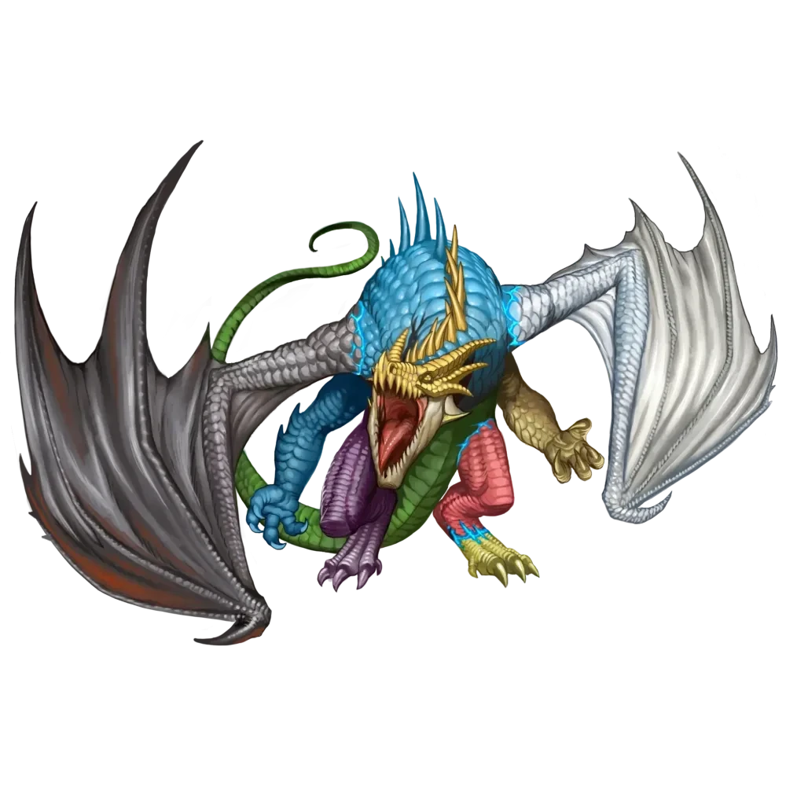
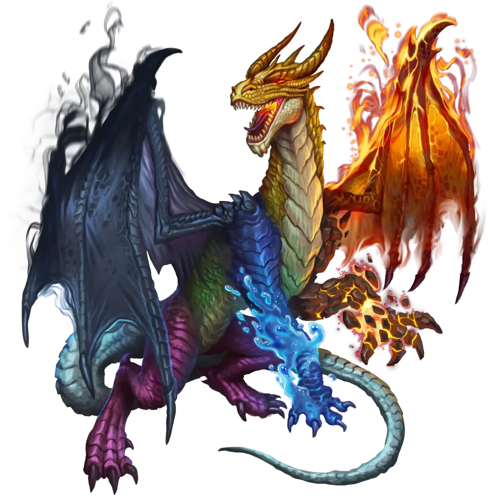

各年龄段数据卡
受失控变形魔法的影响，流变龙时刻处于永不停歇的流转异变之中。人们很难对它们加以归类定性，因为千变万化的形体特质往往也会渗透进它们的性格之中：这一个月里，一头流变龙或许还对他人和善可亲、充满好奇；到了下一个月，却可能变得残忍嗜血、狂暴凶戾。这种性情剧变有时――但并非总是――与巨龙躯体的变形同步发生，往往会令周边聚落误以为自己打交道的是几头截然不同的巨龙。某些心怀鬼胎的流变龙甚至会故意利用这种误解，拒不为“另一头巨龙”惹出的祸端承担责任。更有甚者曾与当地居民达成交易，收钱去驱赶那头它们心知肚明绝不会再露面的恶龙……因为那从头到尾根本就是心情恶劣时的它自己。 阿利诺斯特拉兹远古流变龙阿利诺斯特拉兹长年累月不断地向自己体内灌注越来越多的变形魔法，以至于如今早已不再拥有任何单一的真实形态。阿利诺斯特拉兹的色泽、体型与外貌无时无刻不在变幻，看似毫无规律地肆虐乡野，所到之处尽是混乱与毁灭。在大多数人眼中，这头巨龙与其说是一个可以讲理或讨伐的生物，不如说更像是一场天灾或神罚。倘若阿利诺斯特拉兹怀有什么隐秘图谋，至今无人能够参透；倘若阿利诺斯特拉兹拥有某处巢穴，至今也无人能够寻获。 正如自身变化无常的天性一般，流变龙常常四处寻觅全新环境，很少在同一个地方长久驻留。它们总是在追寻下一场新奇体验――那或许正握有稳定自身形态的关键钥匙。正因如此，流变龙通常没有固定巢穴；不过也有部分个体会选择乘坐三桅大帆船或魔力飞艇等大型载具周游世界。这类移动载具巢穴虽比寻常龙巢小上不少，却也成了流变龙的行动基地与宝库所在。至于徒步或振翅云游四方的流变龙，要么干脆不蓄积宝库，要么便将财宝收进可随身携带的异次元空间中。流变龙的宝库五花八门、兼收并蓄，装满了曾短暂吸引巨龙目光、旋即又失宠过气的各色物件。流变龙会按照自己不断转移的痴迷癖好，将宝库分门别类地堆叠成一层层“地层”――从一小批魔法长剑，到一堆紫色宝石，再到一座名副其实的稀有钱币大山。每当流变龙想要找出过去收藏的某件特定器物时，往往不得不翻遍好几层财宝沉积层；而这通常颇费工夫，因为过往藏品勾起的回忆很容易让它分心走神。尽管流变龙或许早已不再追捧那些旧藏，但当年搜集它们时的经历，却依然分毫毕现地镌刻在它的记忆里。 当流变龙处于喜爱交际的心境时，它们很乐意与其他巨龙、狗头人以及蜥蜴人为伴。有些长期与其他鳞族生物朝夕相处的流变龙，甚至会在不知不觉间习染同伴的形貌与性情。例如，一头与靛青龙共同生活了数月的流变龙，某天一觉醒来可能会发现自己长出了更多靛青色鳞片，甚至开始模仿靛青龙的言行举止，突然领悟到纵情盛大派对的妙处；反过来，长期受狂怒龙熏陶的流变龙，则可能会染上动辄诉诸狂暴攻击的倾向。不过这些改变并非永久性的――只要流变龙独处同等长度的时间，便不可避免地会退回随机变化的形貌与心性。 无痛异变尽管部分流变龙对自身时常发生的形体变化显得颇为苦恼，但并无任何迹象表明这种变形会带来明显的肉体痛楚。诚然，在遭受重创之后，流变龙的鳞片色泽可能会随之改变；但据大多数永光流变龙描述，这种身体调整带来的不适感充其量不过像打了一个响亮的喷嚏。熟悉变形法术的施法者都明白，此类魔法除非被用于攻击敌人，否则通常不会伴随痛觉――唯有在恶意变形的情况下，肌肉与皮肤的强行拉扯以及骨骼的扭曲重塑才会带来撕心裂肺的剧痛。 万象形态帕拉克西提拉斯流变龙终其一生都在不受控制地转换与改变自身形态。随着年岁增长，许多生物都会日渐僵化、固步自封，流变龙却恰恰相反――它们只会愈发强化自身的不稳定倾向与变形潜能。而这趟演化之旅的必然终点，或许正是“万象形态”帕拉克西提拉斯这样的存在。 年轻时的帕拉克西提拉斯曾试图将自己雕琢成心目中的理想形态，借此摆脱体内变形魔法永无休止的流转变幻，然而每一次实验都比上一次更加灾难深重。好在“万象形态”比同处这一境地的其他同族谨慎得多：除非事先确信绝不会留下永久性的负面后遗症，否则它绝不贸然开展任何试验或测试。 得益于这种相对稳健克制的实验态度，帕拉克西提拉斯虽然始终未能真正以可观的方式稳定住自身躯体，却反而在根本与直觉层面上，对自身本质领悟出了远超其他流变龙的深邃认知。 流变纪念藏品在汹涌变形魔法的冲刷下，就连流变龙的肉身都在时刻流转异变，因此它们的宝库收藏偏好难以保持恒定也就不足为奇了。流变龙宝库中的每一道“沉积层”都代表着其收藏癖好的某一特定阶段；正因如此，对于像我这样试图研究流变龙心智与躯体如何在漫长岁月中同步演变的学者而言，这些宝库具有不可估量的学术价值。当然，在翻检整理流变龙宝库时必须格外小心，因为它们堆叠藏品层次的方式有时颇为随心所欲――价值连城的玻璃器皿与古董珍玩可能被它们无意间压在了重甲与钝击武器层之下，稍有不慎便可能压碎下层藏品，甚至引发一连串毁掉多层宝藏的坍塌事故。 帕拉克西提拉斯的躯体异变固然仍不受自身控制，但它至少在一定程度上摸清了自己身体会在何时、因何缘由、以何种方式发生变形。无论在应对同族劲敌还是潜在屠龙者时，这份洞见都为它带来了远胜其他流变龙的巨大优势。 历经数个世纪的深入探索后，帕拉克西提拉斯取得了一项全新发现：既然稳定自身形态依旧绝无可能，那么在摸透了影响躯体的失控变形规律之后，它便循序渐进地创出了一套能够顺势借用预判形变的独特战法。 而在彻底掌握这套战法后，它又开始以一种与青年时代截然不同的思路，慢慢训练自己驾驭变形之力。抗拒变化已被证明纯属徒劳；唯有坦然拥抱变化、顺应流变之势，它终于学会了因势利导地轻推与微调自身异变，使其贴合眼下的战局所需。 融会贯通这股全新力量之后，帕拉克西提拉斯开发出了世间前所未见的奇诡变形组合，能够随心演化出几乎任何身体特征与形态的搭配，并由此赢得了“万象形态”的尊号。随着帕拉克西提拉斯年岁渐高、威能日盛，这一名号也自此传遍天下。 预料未料之事在筹划讨伐流变龙的战斗时，精明的屠龙者必须将一点纳入考量：这头巨龙的进攻与防御能力随时都可能在瞬息之间彻底改头换面。与其他拥有固定免疫和弱点的巨龙不同，流变龙的抗性变幻莫测，其吐息武器也同样如此。冒险者若想在与流变龙的交锋中活着走出来，就必须准备丰富多样的伤害手段，并兼顾多系元素与能量防护。 如今已臻太古龙之境的帕拉克西提拉斯，仍在追求对变形与易形奥秘更深层次的掌控与洞见。距离它放弃青年时代的旧实验虽已过去了数个世纪，但如今这头威能赫赫的太古巨龙终于重拾信心，坚信自己定能在昔日屡战屡败的领域大功告成。 这份自信固然有几分底气，但帕拉克西提拉斯巢穴周边的广袤土地，如今却日益沦为一系列极度危险实验的巨型试验场，且每一次实验的规模与威力都在不断攀升。年轻时的帕拉克西提拉斯为了确保自身不留永久后遗症，尚且会控制实验破坏力的上限；可如今身为太古龙，“万象形态”几乎能够硬扛下任何失败实验掀起的可怕冲击――这对于周边诸国而言，绝非什么好兆头。 帕拉克西提拉斯重拾旧业之举，究竟会结出惊世骇俗的全新研究成果、为天下所有流变龙带来希望曙光，还是会为大片疆土招致灭顶浩劫？又或者，这一切终将落入两者之间――并非以惊天巨响收场，而是归于一声唏嘘低吟？ 表象之下尽管流变龙外表混沌无序、变幻不定，但永不停歇的变形并不总是掩盖着更深层的本相。深植于流变龙骨髓与灵魂之中的真性暗流，即便在骨骼移位爆响之时，依然能为它们提供锚定自我的根基。是否只需借助真实视觉之类的手段，便能看穿那份真实本性？我曾亲自尝试过，却一无所获。或许这需要更强大的魔法，又或许只需要一份更纯粹、更深沉的共情，辅以漫长相识岁月里的持续追踪观察。 追寻不可知者 Chasing the Unknowable远古流变龙阿利诺斯特拉兹向来是个难解之谜，因此一如既往地，我决定像开展其他研究课题那样亲自前去寻找答案。迄今为止，尚无人能够锁定阿利诺斯特拉兹的巢穴位置，也无人能摸清它的真实意图。我原本心想，说不定自己能成为史上第一人！遗憾的是，事实证明阿利诺斯特拉兹果真如传闻中那般喜怒无常、狂暴凶戾。在这场未遂的访谈尝试中，我总算大体完好地逃出生天，只被烧焦了几片龙鳞，但也确实对它巢穴的大致方位得出了比以往更靠谱几分的推测。看来还需要进一步深入研究……等我先把伤养好再说。 ――永光贤者卡利赞德雷克斯 |
 流变龙  流变龙 |